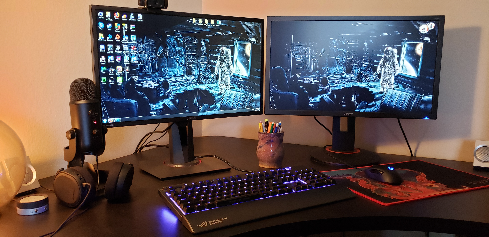

How Many Monitors Do You Need?
Written by: The PC Parts Guide Team
March 2026 • 7 min read
One monitor? Two? An ultrawide? A vertical side monitor? There's no single right answer — it depends on what you actually do with your PC. This guide helps you figure out the perfect setup for your needs and budget.
Monitor Basics First
Before deciding how many, let's make sure you know what specs to look for in a monitor.
Resolution: How Sharp Is the Image?
| Resolution | Name | Best For | GPU Required |
|---|---|---|---|
| 1920×1080 | 1080p / Full HD | Budget gaming, everyday use | RTX 3060 or lower |
| 2560×1440 | 1440p / 2K / QHD | Mid-range gaming, productivity | RTX 4070 / RX 7800 XT |
| 3840×2160 | 4K / UHD | High-end gaming, video editing | RTX 4080 / RX 7900 XT |
| 3440×1440 | Ultrawide (21:9) | Immersive gaming, multitasking | RTX 4070 or higher |
Refresh Rate: How Smooth Is the Motion?
Refresh rate (Hz) is how many frames your monitor can show per second.
- 60Hz: Basic. Fine for office work, movies, casual gaming.
- 144Hz: Standard for gaming. Noticeably smoother than 60Hz.
- 165–180Hz: Mid-range gaming sweet spot.
- 240Hz+: Competitive FPS gaming (Valorant, CSGO). You'll feel every frame.

1 Monitor: The Standard
One monitor is perfectly fine for most people. It keeps things simple, your desk clean, and your GPU only needs to drive one screen.
Go with one monitor if you:
- Mainly game and want to focus on one screen
- Have a smaller desk
- Are on a budget
- Watch movies and browse casually
2 Monitors: The Productivity Upgrade
Two monitors is probably the most popular setup among PC enthusiasts. You get a huge productivity boost because you can have two full windows open side by side — no more Alt+Tab constantly.
Popular dual monitor setups:
- Main gaming monitor (144Hz+) + Side info monitor (60Hz) — Watch YouTube, chat on Discord, or monitor your temps on the second screen while gaming on the first
- Two same-size monitors — Perfect for students, programmers, and office workers who need two documents or windows open at once
- Main 1440p + secondary 1080p — Primary for games/editing, secondary for reference or communication apps
3+ Monitors: For Specific Use Cases
Three or more monitors is a niche setup that makes a lot of sense for specific people — and is overkill for everyone else.
- Triple monitor gaming: Surrounds you for a panoramic view in racing or flight simulators. Requires a very powerful GPU and a wide desk.
- Stock traders / analysts: Need to watch many charts, news feeds, and dashboards simultaneously.
- Video editors: One for the timeline, one for the preview, one for reference footage.
- Streamers: Main gaming screen, stream management (OBS), and chat/alerts.
What About an Ultrawide?
An ultrawide monitor (21:9 aspect ratio, typically 3440×1440) gives you the width of two monitors in one seamless screen with no bezel in the middle. It's an amazing experience for gaming and multitasking.
- No bezel gap in the middle (unlike two monitors side by side)
- Incredibly immersive for open-world games
- Great for video editing (more timeline space)
- More expensive — quality ones start at ₱18,000+
- Some competitive games don't support ultrawide
- Needs a more powerful GPU than a regular 1440p monitor
Vertical Monitor: The Hidden Gem
One trend that's growing: using a secondary monitor in portrait (vertical) orientation. This is surprisingly useful for:
- Reading long articles, documentation, and code
- Scrolling through Discord or Twitter
- Reference images in a taller format
You can rotate most monitors 90° — check that the monitor stand supports pivot rotation before buying.
Summary: How Many Do You Need?
| You Are... | Ideal Setup |
|---|---|
| Casual gamer / student on a budget | 1x 24" 1080p 144Hz |
| Competitive gamer (Valorant, CSGO) | 1x 24" 1080p 240Hz |
| AAA gamer who wants beauty | 1x 27" 1440p 144Hz |
| Gamer + student / multitasker | 2x monitors (main 144Hz + secondary) |
| Content creator / streamer | 2–3 monitors or 1 ultrawide |
| Programmer / office worker | 2 monitors or 1 ultrawide + 1 vertical |
| Trading / data analyst | 3–4 monitors |
• 1 monitor = Fine for most gamers and students
• 2 monitors = Big productivity boost, popular and practical
• 3+ monitors = Only for specific use cases
• Ultrawide = Best of both worlds for gamers and creators
• Minimum 144Hz for gaming — you'll never go back to 60Hz
• 1080p is fine, 1440p is the upgrade worth having